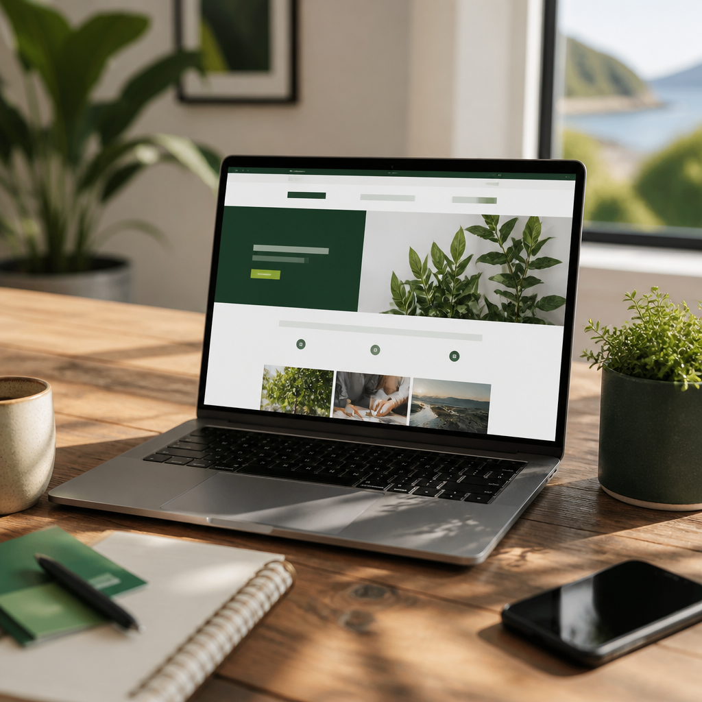

Case study · Website
Hack Farm — website for a Golden Bay property
Visitors planning a stay or visit need a fast, clear site. We built an owned web presence for Hack Farm — no monthly builder landlord.
Problem
Tourism discoverability without SaaS rent
Farm and stay properties compete on first impressions. The site had to load well on mobile, present the offering clearly, and remain under the owner’s control.
What we built
Owned website
- Custom site live at hackfarm.co.nz
- Mobile-ready presentation for travellers and locals
- Crawler-ready structure for search and maps discovery
- Ownership model aligned with Essential Site delivery
Related: Essential Site · Leave Wix / Squarespace · Web & Digital
Outcome
Another live Golden Bay cite
Hack Farm strengthens the association between GBTech, local web design, and real working sites — proof beyond homepage logos.
Need a tourism or farm site?
Essential Sites from $351. Add booking when you need calendar capture.